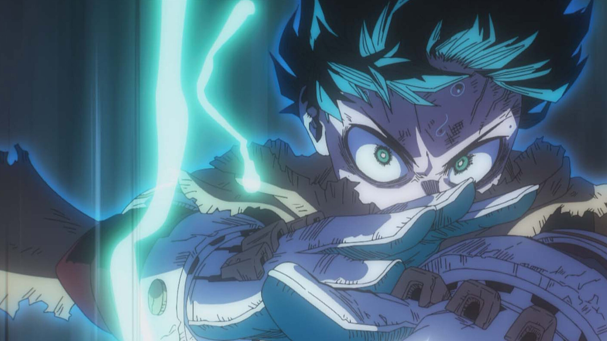
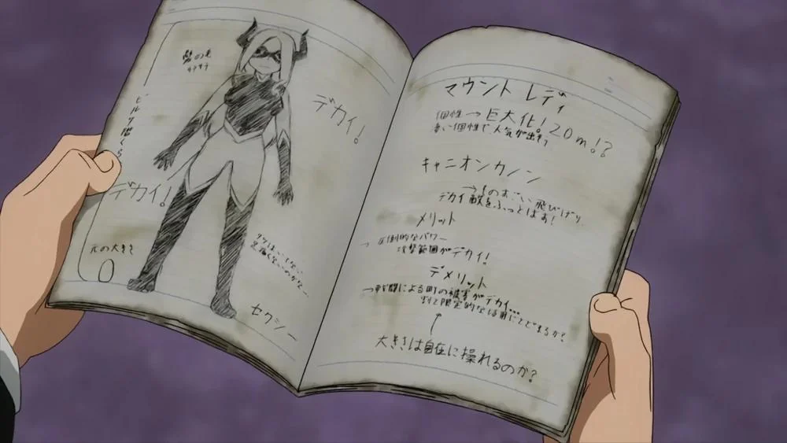

英雄訓練

綠谷出久最大的興趣就是進行英雄訓練。 為了能夠完全掌握 One For All 的力量， 他每天都努力鍛鍊體能與戰鬥技巧， 即使受傷也不輕言放棄。
研究英雄能力

從小開始，綠谷就喜歡觀察各種英雄的能力與戰鬥方式， 並詳細記錄在自己的英雄筆記中。 這項興趣讓他在戰鬥時能迅速分析敵人並制定策略。
與同伴一起成長

綠谷非常重視與同學之間的友情。 他喜歡和雄英高中的夥伴們一起訓練、學習， 在互相扶持中不斷成長，成為更可靠的英雄。
朝成為最棒的英雄前進

成為能夠拯救他人的英雄，是綠谷出久最大的夢想。 他將追逐夢想視為一種興趣， 無論遇到多少困難，都會堅持自己的信念向前邁進。